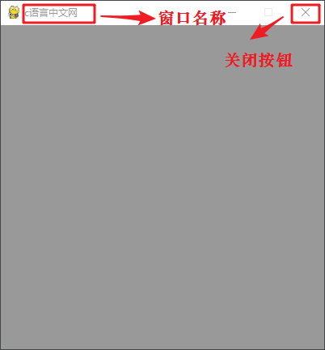

Pygame Display显示模块详解
Pygame 使用
体验过电脑游戏的朋友们都知道，当运行程序后会在电脑桌面上出现一个游戏的主窗口，这个主窗口的本质是一个 surface 对象，把理解为画布、画板、白纸在合适不过了，它相当于一个载体，用于承载一切游戏所用到的元素。假如您需要将一段文本方放置到主窗口中，那么您需要先创建一个包含文本的 surface 对象，之后再将它附加到主窗口上。简单的理解，就是将一张图 A 粘贴到另一张图 B 上。
主窗口（screen）相当于游戏程序中尺寸最大的 Surface 对象，在这个最大的“画布”中，我们还可以添加其他“小”的 Surface 对象，这些对象以矩形的形式存在于主窗口中，它们共同组成了一个游戏程序。通过下列方法可以将一个 Surface 对象粘贴至主窗口上：
除了创建游戏的主窗口之外，display 模块还提供了许多的和“显示”相关的方法，比如设置游戏窗口的名称，如下表所示
pygame.display 模块还提供了一些和“显示”相关的其他方法，如下表所示：
pygame.display显示模块中的方法创建游戏的主窗口：screen = pygame.display.set_mode(size=(),flags=0)上述函数有两个参数常用参数：
- size：元组参数，用来设置主窗口的大小
- flags：功能标志位，表示创建的主窗口样式，比如创建全屏窗口、无边框窗口等，flags 参数值见下表。
| 标志位 | 功能 |
|---|---|
| pygame.FULLSCREEN | 创建一个全屏窗口。 |
| pygame.HWSURFACE | 创建一个硬件加速窗口，必须和 FULLSCREEN 同时使用。 |
| pygame.OPENGL | 创建一个 OPENGL 渲染窗口。 |
| pygame.RESIZABLE | 创建一个可以改变大小的窗口。 |
| pygame.DOUBLEBUF | 创建一个双缓冲区窗口，建议在 HWSURFACE 或者 OPENGL 时使用。 |
| pygame.NOFRAME | 创建一个没有边框的窗口。 |
体验过电脑游戏的朋友们都知道，当运行程序后会在电脑桌面上出现一个游戏的主窗口，这个主窗口的本质是一个 surface 对象，把理解为画布、画板、白纸在合适不过了，它相当于一个载体，用于承载一切游戏所用到的元素。假如您需要将一段文本方放置到主窗口中，那么您需要先创建一个包含文本的 surface 对象，之后再将它附加到主窗口上。简单的理解，就是将一张图 A 粘贴到另一张图 B 上。
主窗口（screen）相当于游戏程序中尺寸最大的 Surface 对象，在这个最大的“画布”中，我们还可以添加其他“小”的 Surface 对象，这些对象以矩形的形式存在于主窗口中，它们共同组成了一个游戏程序。通过下列方法可以将一个 Surface 对象粘贴至主窗口上：
scrren.blit(source, dest, area=None, special_flags = 0)下面对上述参数做简单的介绍：
- source：表示要粘贴的 Surface 对象。
- dest：主窗口中的一个标识的坐标位置，可以接受一个 (x,y) 元组，或者 (x,y,width,height) 元组，也可以是一个 Rect 对象；
- area：接受一个 Rect 对象，默认为 None，如果提供该参数则相当于抠图操作，即在屏幕的指定区域显示想要的内容；
- special_flags：可选参数，它是 Pygame.1.8 版本新增的功能，用于指定对应位置颜色的混合方式，参数值有 BLEND_RGBA_ADD、BLEND_SUB 等。如果不提供该参数的情况下，默认使用 source 的颜色覆盖 screen 的颜色。
除了创建游戏的主窗口之外，display 模块还提供了许多的和“显示”相关的方法，比如设置游戏窗口的名称，如下表所示
import sys
import pygame
#使用pygame之前必须初始化
pygame.init()
#设置主屏窗口
screen = pygame.display.set_mode((400,400))
#填充主窗口的背景颜色，参数值RGB（颜色元组）
screen.fill((156,156,156))
#设置窗口标题
pygame.display.set_caption('c语言中文网')
# 如果没有下列主循环代码，运行结果会一闪而过
while True:
# 循环获取事件，监听事件
for event in pygame.event.get():
# 判断用户是否点了关闭按钮
if event.type == pygame.QUIT:
#卸载所有模块
pygame.quit()
#终止程序
sys.exit()
#更新屏幕内容
pygame.display.flip()
程序的运行结果如下所示：

图1：Pygame程序运行结果
图1：Pygame程序运行结果
pygame.display 模块还提供了一些和“显示”相关的其他方法，如下表所示：
| 方法名称 | 说明 |
|---|---|
| pygame.display.get_surface() | 获取当前显示的 Surface 对象。 |
| pygame.display.flip() | 更新整个待显示的 Surface 对象到屏幕上。 |
| pygame.display.update() | 更新部分软件界面显示。 |
| pygame.display.Info() | 产生一个 VideoInfo 对象，包含了显示界面的相关信息。 |
| pygame.display.set_icon() | 设置左上角的游戏图标，图标尺寸大小为 32*32。 |
| pygame.display.iconify() | 将显示的主窗口即 Surface 对象最小化，或者隐藏。 |
| pygame.display.get_active() | 当前显示界面显示在屏幕上时返回 True，如果窗口被隐藏和最小化则返回 False。 |
关注公众号「站长严长生」，在手机上阅读所有教程，随时随地都能学习。内含一款搜索神器，免费下载全网书籍和视频。

微信扫码关注公众号